Отслеживайте историю взаимодействия с вашими клиентами, загружая почту в Creatio. Полученные email-сообщения будут автоматически связаны с другими записями системы. Вы можете создавать и отправлять письма непосредственно из Creatio, запускать преднастроенные в системе бизнес-процессы по email-сообщениям.
Область email-сообщений открывается по кнопке коммуникационной панели. Счетчик кнопки отображает количество новых email-сообщений.
В верхней части вкладки Email коммуникационной панели размещены фильтры, а также кнопки для управления почтой (Рис. 1). Вы можете:
-
Создать новое email-сообщение.
-
Добавить новую учетную запись и настроить почтовый ящик.
-
Загрузить email-сообщения в Creatio.
-
Отфильтровать письма, например, отобразить только исходящие или только необработанные email-сообщения.
Email-сообщения организованы в виде списка. В каждом письме отображаются данные отправителя, время отправки, тема письма и начальный фрагмент текста. В нижней части каждого письма отображаются значки всех связанных с письмом записей (Рис. 2).
Отправить письмо
-
Нажмите кнопку
 коммуникационной панели.
коммуникационной панели. -
Чтобы создать новое email-сообщение, нажмите кнопку .
-
Заполните необходимые поля на странице email-сообщения:
-
В поле От кого выберите почтовый адрес, с которого будет отправлено письмо. Если для этой учетной записи настроена подпись, то она будет автоматически добавлена в окно ввода текста.
-
Укажите электронный адрес получателя в поле Кому.
-
При необходимости заполните поля Копия и Скрытая копия, которые отобразятся по нажатию на кнопки CC и BCC.
-
Укажите тему электронного сообщения.
-
Введите текст письма.
-
Чтобы добавить в тело письма рисунок, вставьте его из буфера обмена или перетащите мышью (drag&drop) в поле с текстом письма (Рис. 3).
Рис. 3 — Добавление изображения при помощи drag&drop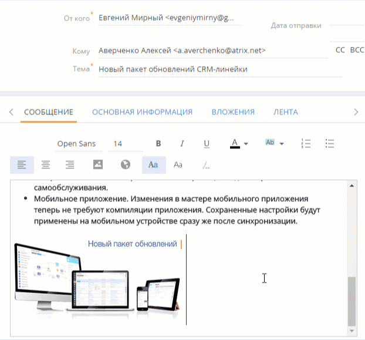
-
-
Перейдите на вкладку Основная информация.
-
Заполните поля Отображать в расписании, Начало и Завершение, если необходимо отображать время, затраченное на подготовку электронного сообщения, в расписании.
-
Если email-сообщение связано с другими объектами системы, например, производится отправка документа по продаже, то укажите их в группе полей Связи.
-
-
Для добавления вложений перейдите на вкладку Вложения страницы email-сообщения:
-
Нажмите кнопку Добавить файл.
-
В открывшемся окне выберите файл вложения.
-
-
Для отправки сообщения нажмите кнопку Отправить.
В результате электронное сообщение будет отправлено из почтового ящика, который выбран в поле От кого, по указанным в полях Кому, Копия и Скрытая копия адресам. Состояние отправки email-сообщения будет изменено на “Завершена”.
Отправить письмо по шаблону
Вы можете использовать шаблоны email-сообщений при ведении email-переписки с помощью кнопки  на панели действий. Панель действий доступна в некоторых разделах системы, например, Контакты, Контрагенты, Лиды и т. п.
на панели действий. Панель действий доступна в некоторых разделах системы, например, Контакты, Контрагенты, Лиды и т. п.
Для создания сообщения по шаблону:
-
На странице записи, например, контакта, нажмите кнопку на панели действий.
-
В области email-сообщения заполните поля От кого, Кому, Тема и др.
-
Вместо ввода текста письма перейдите к выбору нужного шаблона из справочника по кнопке /... (Рис. 4).
Рис. 4 — Переход к выбору шаблона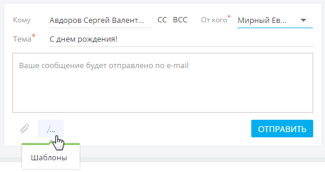 -
Выберите шаблон из списка доступных.
В списке шаблонов отображаются записи справочника Шаблоны email-сообщений. При отправке письма со страницы контакта в списке отображаются те шаблоны из справочника, в которых в качестве источника макросов указан “Контакт”, а также шаблоны, в которых источник макросов не указан. Аналогично для контрагентов, лидов и т. п.
В результате отобразится email-сообщение с подставленными значениями макросов, например, именем получателя в приветствии, именем отправителя в подписи и т. д.
-
Отредактируйте текст шаблона и нажмите кнопку Отправить.
Шаблоны формируются в справочнике Шаблоны email-сообщений. При формировании шаблонов используется дизайнер контента.
Загрузить письма
-
Нажмите кнопку
 коммуникационной панели.
коммуникационной панели. -
В меню кнопки
 выберите команду Синхронизировать почту (Рис. 5).Рис. 5 — Синхронизация почты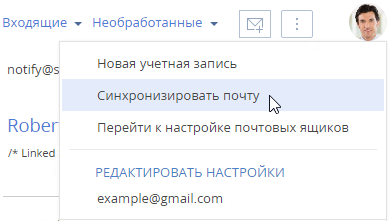
выберите команду Синхронизировать почту (Рис. 5).Рис. 5 — Синхронизация почты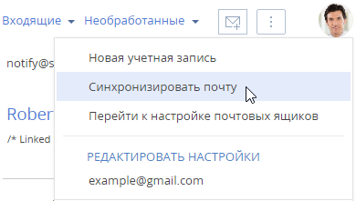
В результате в систему будут загружены email-сообщения из всех преднастроенных для синхронизации папок вашего почтового ящика. Если загруженное сообщение содержало вложения, то они автоматически добавятся на деталь Файлы вкладки Вложения.
При загрузке почты в Creatio автоматически производится первичная обработка полученных email-сообщений:
-
Значение поля От кого сопоставляется со средствами связи зарегистрированных в Creatio контрагентов и контактов. Если в системе будут найдены совпадения, то на странице такого email-сообщения будут автоматически заполнены поля Контрагент, Контакт.
-
Если в системе не найдено совпадений, то анализируются значения полей Кому, Копия, Скрытая копия. Если по этим полям в системе будут найдены совпадения, то на странице такого email-сообщения также будут заполнены поля Контрагент, Контакт.
-
Производится проверка преднастроенных в системе правил связывания писем с другими объектами системы. Подробнее >>>
В результате в качестве автора и ответвенного по записи, созданной в Creatio, будет указан пользователь, который загрузил письмо.
Обработать письмо
Email-сообщение считается обработанным, если у него заполнены поля Контрагент или Контакт и хотя бы одно из полей связи, например, Продажа или Договор.
При загрузке почты email-сообщения обрабатываются в системе автоматически по правилам связывания писем с другими объектами системы.
Те письма, которые не были обработаны автоматически, вы можете обработать вручную:
-
Выберите фильтр Необработанные в области фильтров (Рис. 6).
Рис. 6 — Выбор фильтра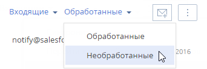 -
Выделите письмо, которое требует обработки (Рис. 7).
Рис. 7 — Пример необработанного письма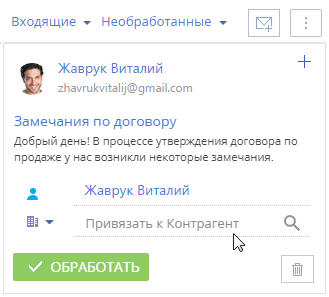 -
Если необходимо, то свяжите email-сообщение с одним или несколькими из объектов системы. Как вручную связать письмо с другими записями, описано в блоке Связать письмо с другими записями вручную.
-
Нажмите кнопку Обработать. Если письмо, которое вы обработали, является частью переписки, то Creatio предложит вам обработать сразу все письма цепочки.
В результате данное письмо или цепочка писем больше не будут отображаться в перечне необработанных email-сообщений. Системный признак Нуждается в обработке у таких email-сообщений будет снят. Чтобы просмотреть перечень обработанных писем, выберите фильтр Обработанные в области фильтров.
Запустить бизнес-процесс по письму
В Creatio могут быть настроены бизнес-процессы, связанные с обработкой email-сообщений. Например, если клиент в письме интересуется продуктами вашей компании, то необходимо зарегистрировать лид, а если в его письме содержалось какое-либо пожелание или вопрос — создать обращение.
Для запуска бизнес-процесса по email-сообщению:
-
Нажмите кнопку
 коммуникационной панели.
коммуникационной панели. -
Выделите письмо, которое требует обработки.
-
В меню кнопки 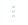 выберите процесс, который необходимо запустить по данному email-сообщению (Рис. 8).
Рис. 8 — Запуск процесса по email-сообщению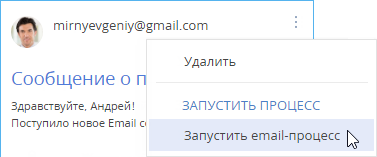
В результате по выбранному email-сообщению будет запущен соответствующий бизнес-процесс.
 email-сообщения, в параметрах бизнес-процесса необходимо указать тег “Email Process”, а также параметр с типом данных
email-сообщения, в параметрах бизнес-процесса необходимо указать тег “Email Process”, а также параметр с типом данных Создать запись из письма
Из email-сообщения в коммуникационной панели можно создать новую запись в любом разделе системы. Например, по письму от неизвестного отправителя может быть создан новый контакт. При этом на его странице автоматически заполнятся ФИО и email-адрес из сообщения. Если создается другая запись (например, продажа, счет или заказ), то на ее странице контактные данные из письма автоматически отобразятся в предусмотренных для них полях. Так при создании новой продажи в поле Клиент страницы продажи будет указано название контрагента или ФИО контакта.
Рассмотрим создание новой записи по email-сообщению на примере контакта.
-
Нажмите кнопку коммуникационной панели.
-
Выделите нужное письмо.
-
По кнопке
 в правом верхнем углу письма выберите команду Создать новый (Рис. 9).Рис. 9 — Создание новой записи из email-сообщения на коммуникационной панели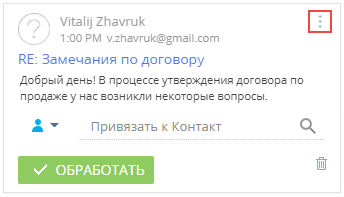
в правом верхнем углу письма выберите команду Создать новый (Рис. 9).Рис. 9 — Создание новой записи из email-сообщения на коммуникационной панели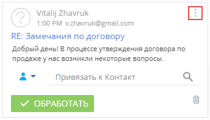 -
В отобразившемся меню выберите необходимый объект, например, “Контакт” (Рис. 10).
Рис. 10 — Выбор объекта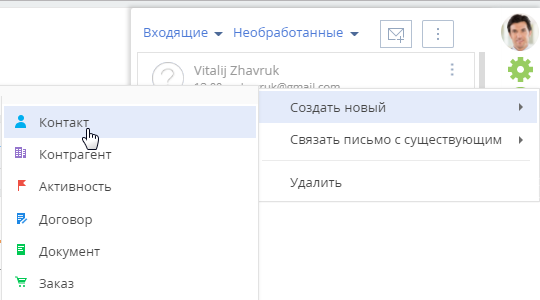 -
Будет создана страница нового контакта, на которой поля ФИО и Email будут автоматически заполнены данными из письма. При наличии дополнительных данных о контактезаполните соответствующие поля на его странице и сохраните изменения (Рис. 11).
Рис. 11 — Страница контакта, созданного по email-сообщению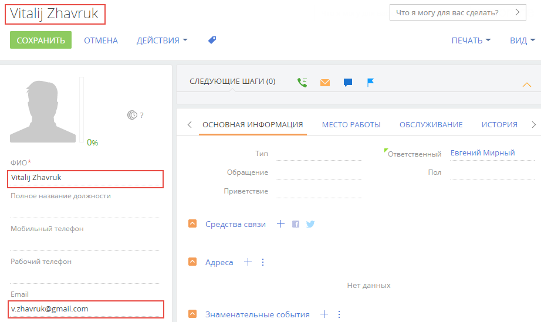
В результате выполненных действий в разделе Контакты появится новая запись, созданная по данным из email-сообщения.
Связать письмо с другими записями вручную
Вручную связать письмо с другими записями системы можно несколькими способами:
-
С помощью специального поля связи с email-сообщением, указав в нем необходимый объект для связи (Рис. 12).
-
По кнопке
 в правом верхнем углу письма (Рис. 13).
в правом верхнем углу письма (Рис. 13).

-
На вкладке Основная информация страницы email-сообщения. Для перехода на страницу email-сообщения кликните по заголовку письма.
В результате привязанное email-сообщение отобразится на вкладке История страницы контрагента.
Связать письмо с другими записями автоматически
Чтобы входящее или исходящее email-сообщение автоматически связывалось с другими объектами системы, выполните настройку справочника Правила связывания писем с разделами системы. Например, если в теме письма указан номер счета, то такое email-сообщение автоматически свяжется с зарегистрированным в Creatio счетом.
Для настройки правил связывания:
-
Откройте дизайнер системы нажатием кнопки
 в правом верхнем углу приложения.
в правом верхнем углу приложения. -
В группе “Настройка системы” кликните по ссылке “Справочники”.
-
Откройте наполнение справочника Правила связывания писем с разделами системы.
-
На странице справочника нажмите кнопку Добавить правило или откройте ранее зарегистрированное правило, которое необходимо изменить.
-
На открывшейся странице заполните необходимые поля (Рис. 14):
Рис. 14 — Пример настройки правила связывания писем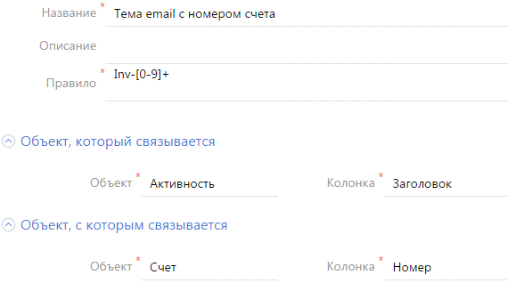 -
Укажите название правила, например “Тема email с номером счета”.
-
В поле Правило напишите регулярное выражение, согласно которому необходимо определять фрагмент темы письма для связи со счетом.
Например, если у вас в системе настроена автонумерация счетов: Inv-1, Inv-2, Inv-3, ..., Inv-n, то вам необходимо написать регулярное выражение: Inv-0-9 +. В результате при получении email-сообщения с темой “Дополнительная информация по счету Inv-53”, система автоматически проверит наличие в Creatio счета с указанным номером. Если такой счет зарегистрирован, то система заполнит соответствующим значением поле Счет на странице email-сообщения.
-
Заполните группу полей Объект, который связывается. Для автоматического связывания email-сообщений с записями системы в поле Объект выберите значение “Активность”. В поле Колонка укажите поле, по которому необходимо определять связь. Поиск совпадений производится по теме письма, а тема письма указывается в колонке Заголовок.
-
Заполните группу полей Объект, c которым связывается. В поле Объект выберите объект системы, для которого настраивается правило, например, “Счет”. В поле Колонка укажите колонку, по которой необходимо производить поиск совпадений. В рассматриваемом примере это колонка Номер.
-
-
Сохраните правило.
-
По аналогии добавьте правила связи с другими разделами.
В результате при загрузке почты в Creatio и в момент отправки письма из Creatio будет выполняться проверка тем email-сообщений согласно настроенным правилам. Если совпадения будут найдены, то у таких сообщений автоматически заполнятся поля связи. Кроме того, такие email-сообщения будут отмечены в системе как обработанные.
Часто задаваемые вопросы по работе с почтой в Creatio
Почему при регистрации почтового ящика приходит сообщение, что логин/пароль некорректен?
Правила безопасности почтовых серверов иногда блокируют доступ к почтовым ящикам из внешних приложений. Если при регистрации учетной записи вы внесли все необходимые данные, но получили уведомление о некорректности имени пользователя или пароля, то выполните следующие действия:
-
В настройках почтового ящика включите доступ по протоколу IMAP. Обычно пересылка и работа с протоколами POP/IMAP вынесены в отдельную группу настроек.
-
В настройках безопасности почтового аккаунта откройте доступ к вашей учетной записи для внешних приложений.
-
В большинстве случаев почтовый сервер отправляет пользователю письмо о попытке внешнего подключения к почтовому ящику. Подтвердите подлинность подключения, перейдя по ссылке из этого письма.
-
Повторите регистрацию.
Как настроить свой почтовый провайдер?
Для настройки интеграции с почтовым провайдером необходимо, чтобы на сервере приложения были открыты 25 и 587 порты. На странице выбора провайдера в Creatio нажмите кнопку Добавить провайдер, выберите тип провайдера и заполните все настройки для получения и отправки сообщений. Больше информации о настройке почтовых провайдеров доступно в статье Добавить почтовый провайдер IMAP/SMTP и блоке Настройка почты, контактов, расписания MS Exchange / Microsoft 365 .
Почему процесс синхронизации почты завершился успешно, а новых писем в системе нет?
Такая проблема может возникать в двух случаях:
-
В объект “Активность” было добавлено обязательное на уровне приложения поле.
Для того чтобы почта загружалась корректно, измените атрибуты поля, сделав его не обязательным в объекте, но обязательным на странице.
-
Письма, загружаемые с почтового сервера IMAP, ранее были загружены в систему и удалены, либо ранее были загружены в любое другое внешнее почтовое приложение.
Для того чтобы загрузить письма в систему, измените название справочника, созданного на основании объекта “EmailSynchronizedKey”, на произвольное.
Как добавить общий почтовый ящик?
Общий почтовый ящик службы поддержки используется для обмена сообщениями между сотрудниками службы поддержки и клиентами. Настройка общего почтового ящика выполняется аналогично настройке индивидуального почтового ящика, но имеет некоторые особенности.
Почему не загружаются исходящие письма?
В Creatio можно настроить импорт всех писем из вашего почтового ящика или только из некоторых папок. Проверьте для вашей учетной записи настройки папок для загрузки почты.
Если в настройках безопасности почтового ящика доступ к некоторым папкам закрыт для внешних приложений, то эти папки будут недоступны для загрузки в Creatio. Чтобы открыть доступ к папкам для внешних приложений, измените настройки безопасности вашего почтового ящика.
Также в систему могут не загружаться исходящие письма, отправленные из MS Outlook, в связи с тем, что не все почтовые серверы поддерживают сохранение писем, отправленных из внешних приложений.
Почему при отправке письма возникает ошибка "Ошибка отправки письма, обратитесь к системному администратору"?
Данная ошибка может возникнуть в следующих случаях:
-
Запрещена отправка на уровне провайдера.
-
Нет связи с почтовым сервером SMTP.
-
На сервере SMTP закрыт один из портов: 25, 465, 587.
Обратитесь к системному администратору для определения причин и устранения ошибки.
Я не вижу деталь Email в разделе Контакты? Почему?
Согласно настроенной в Creatio логике, деталь Email не отображается на страницах контактов, у которых в поле Тип указано значение “Сотрудник” или в профиле контрагента указан тип “Наша компания”. Изменение данной логики реализуется средствами разработки.